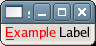

Parses str which is marked up with the Pango text markup language, setting the label's text and attribute list based on the parse results. If characters in str are preceded by an underscore (_), they are underlined indicating that they represent a keyboard accelerator called a mnemonic.
Example 88. Setting GtkLabel Text with Pango Markup and a Mnemonic
<?php
// Create a window to hold the label.
$window = new GtkWindow();
// Set up the window to close cleanly.
$window->connect_simple('destroy', array('Gtk', 'main_quit'));
// Create a label.
$label = new GtkLabel();
// Set some text with Pango markup.
$label->set_markup_with_mnemonic('<span color="red">_Example</span> Label');
// Add the label to the window.
$window->add($label);
// Show the window and start the main loop.
$window->show_all();
Gtk::main();
?> |

The mnemonic key can be used to activate another widget, chosen automatically, or explicitly using set_mnemonic_widget() .